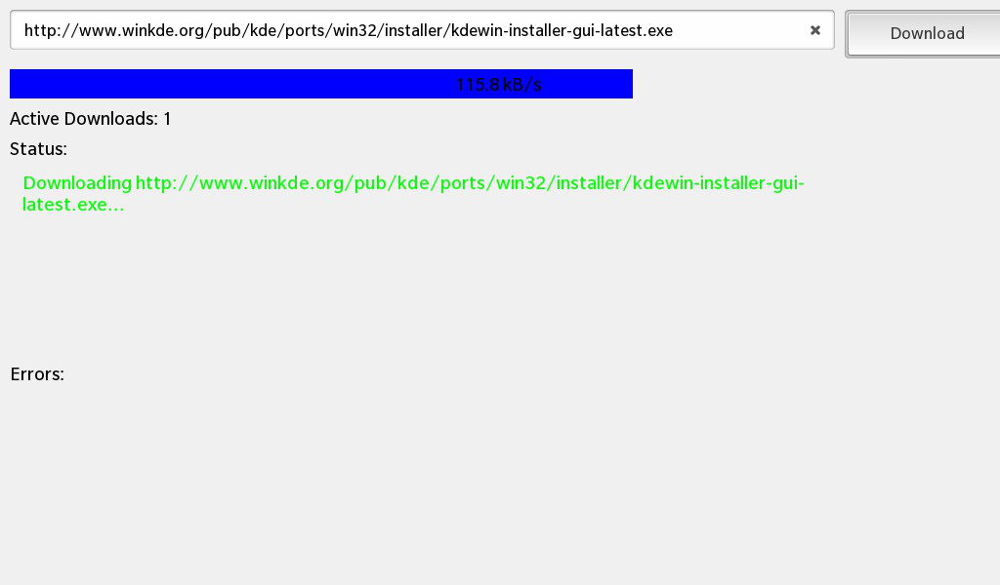

Files:
The Network Download example shows how to implement a queue for multiple downloads using the QNetworkAccessManager class.

In this example we'll learn how to use the QNetworkAccessManager class to download a file over the network and how to monitor the progress and the status of the operation via a QNetworkReply.
The UI of this sample application consists of a text field where the user can enter the URL of the file to download, a button that can be clicked to start the download, a progress bar that shows the current progress of the operation and a status and error label that show status and error messages.
The business logic of the application is encapsulated in the DownloadManager class that is exported as '_manager' to the UI.
// A standard TextField for the url address TextField { id: urlField horizontalAlignment: HorizontalAlignment.Fill hintText: qsTr("Enter URL to download") text: "http://www.winkde.org/pub/kde/ports/win32/installer/kdewin-installer-gui-latest.exe" // Disable the control button upon text input onTextChanging: { downloadButton.enabled = (text != "") } }
The text field is initialized with an URL and whenever the user changes the text, the state of the 'Download' button is adapted to disable it whenever the text field is empty.
// A standard button Button { id: downloadButton horizontalAlignment: HorizontalAlignment.Center topMargin: 50 text: qsTr("Download") // Start download from url on click onClicked: _manager.downloadUrl (urlField.text) }
When the user clicks the 'Download' button, the downloadUrl() slot of the DownloadManager object is invoked with the URL from the text field as parameter.
// A standard Label Label { topMargin: 10 leftMargin: 10 text: qsTr("Active Downloads: ") + (_manager.activeDownloads == 0 ? "none" : _manager.activeDownloads) textStyle.base: SystemDefaults.TextStyles.BodyText textStyle.color: Color.Black } // A standard TextArea for the download status output TextArea { preferredWidth: 900 preferredHeight: 145 backgroundVisible: false editable: false text: _manager.statusMessage // Defines text style with custom Color textStyle { base: SystemDefaults.TextStyles.BodyText color: Color.create("#ff509d4c") } } // A standard TextArea for displaying error output TextArea { leftMargin: 10 preferredWidth: 900 preferredHeight: 125 backgroundVisible: false editable: false text: _manager.errorMessage // Defines a text style with custom Color textStyle { base: SystemDefaults.TextStyles.SmallText color: Color.create("#ffbc3434") } }
The 'text' properties of the status and error labels are bound against the status and error properties of the DownloadManager object, so that the UI is updated automatically as soon as the DonwloadManager changes its state.
// Custom Container for displaying download progress as a bar ProgressBar { topMargin: 10 leftMargin: 10 total: _manager.progressTotal value: _manager.progressValue message: _manager.progressMessage }
The properties of the progress bar (implemented in ProgressBar.qml) are bound against the appropriated properties of the DownloadManager object as well, so that the progress of the download operation can be visualized.
The DownloadManager is the central class in this sample application which contains all the business logic. It is responsible for downloading the requested URL, storing the data on the local file system and publishing the current progress and state via properties.
The DownloadManager can handle multiple download requests, by holding them in an internal queue and processing them one after another. Whenever the user clicks the 'Download' button in the UI, the downloadUrl() slot of the DownloadManager is invoked, which will add the passed URL to the internal queue and triggers the processing of the next queue entry by calling startNextDownload()
void DownloadManager::startNextDownload() { // If the queue is empty just add a new status message if (m_downloadQueue.isEmpty()) { addStatusMessage(QString("%1/%2 files downloaded successfully").arg(m_downloadedCount).arg(m_totalCount)); return; } // Otherwise dequeue the first job from the queue ... const QUrl url = m_downloadQueue.dequeue(); // ... and determine a local file name where the result can be stored. const QString filename = saveFileName(url); // Open the file with this file name for writing m_output.setFileName(filename); if (!m_output.open(QIODevice::WriteOnly)) { addErrorMessage(QString("Problem opening save file '%1' for download '%2': %3").arg(filename, url.toString(), m_output.errorString())); startNextDownload(); return; // skip this download } // Now create the network request for the URL ... QNetworkRequest request(url); // ... and start the download. m_currentDownload = m_manager.get(request); // Connect against the necessary signals to get informed about progress and status changes connect(m_currentDownload, SIGNAL(downloadProgress(qint64, qint64)), SLOT(downloadProgress(qint64, qint64))); connect(m_currentDownload, SIGNAL(finished()), SLOT(downloadFinished())); connect(m_currentDownload, SIGNAL(readyRead()), SLOT(downloadReadyRead())); // Add a status message addStatusMessage(QString("Downloading %1...").arg(url.toString())); // Start the timer so that we can calculate the download speed later on m_downloadTime.start(); }
This method will dequeue the first URL from the internal queue and assemble the target file name on the local file system by calling saveFileName(). Then it tries to open the target file, so that the downloaded data can be saved there.
In the next step a QNetworkRequest object is created with the dequeued URL as parameter. The QNetworkRequest encapsulates all data that describe the resource to download. Additionally to the URL it could also take authentication credentials, cookie information etc. Calling get() on the QNetworkAccessManager returns a QNetworkReply object that can be used to monitor the progress and state of the download operation. Therefor we connect the signals of the reply object to the private slots of the DownloadManager object.
Whenever new data arrive over the network now, the downloadReadyRead() slot is invoked, which writes all retrieved data to the target file.
void DownloadManager::downloadReadyRead() { // Whenever new data are available on the network reply, write them out to the result file m_output.write(m_currentDownload->readAll()); }
Additionally the downloadProgress() slot is invoked, which calculates the speed and progress of the download operation and updates the properties, so that the progress bar in the UI is updated.
void DownloadManager::downloadProgress(qint64 bytesReceived, qint64 bytesTotal) { // Update the properties with the new progress values m_progressTotal = bytesTotal; m_progressValue = bytesReceived; emit progressTotalChanged(); emit progressValueChanged(); // Calculate the download speed ... double speed = bytesReceived * 1000.0 / m_downloadTime.elapsed(); QString unit; if (speed < 1024) { unit = "bytes/sec"; } else if (speed < 1024 * 1024) { speed /= 1024; unit = "kB/s"; } else { speed /= 1024 * 1024; unit = "MB/s"; } // ... and update the progress message. m_progressMessage = QString("%1 %2").arg(speed, 3, 'f', 1).arg(unit); emit progressMessageChanged(); }
When the download operation is finished, the downloadFinished() slot will be invoked, which resets the progress information, updates the status information (whether an error occurred or download was successfully) and deletes the QNetworkReply object, because we gained the ownership of it when calling QNetworkAccessManager::get().
void DownloadManager::downloadFinished() { // Reset the progress information when the download has finished m_progressTotal = 0; m_progressValue = 0; m_progressMessage.clear(); emit progressValueChanged(); emit progressTotalChanged(); emit progressMessageChanged(); // Close the file where the data have been written m_output.close(); // Add a status or error message if (m_currentDownload->error()) { addErrorMessage(QString("Failed: %1").arg(m_currentDownload->errorString())); } else { addStatusMessage("Succeeded."); ++m_downloadedCount; } /** * We can't call 'delete m_currentDownload' here, because this method might have been invoked directly as result of a signal * emission of the network reply object. */ m_currentDownload->deleteLater(); m_currentDownload = 0; emit activeDownloadsChanged(); // Trigger the execution of the next job startNextDownload(); }
In the last step the downloadFinished() slot calls startNextDownload() to trigger the next download from the internal queue.